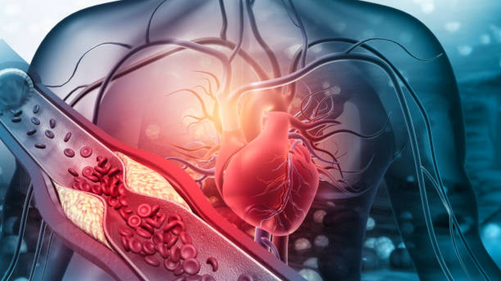
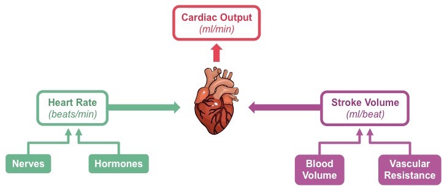
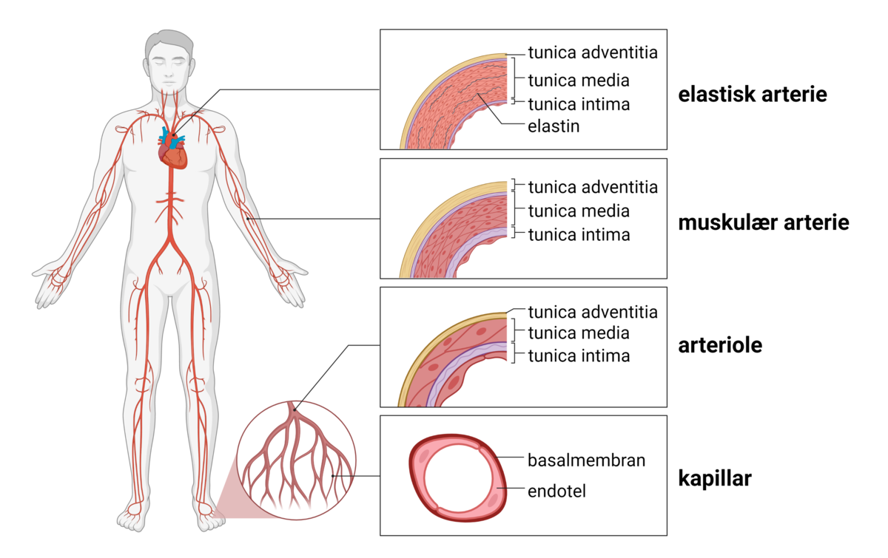
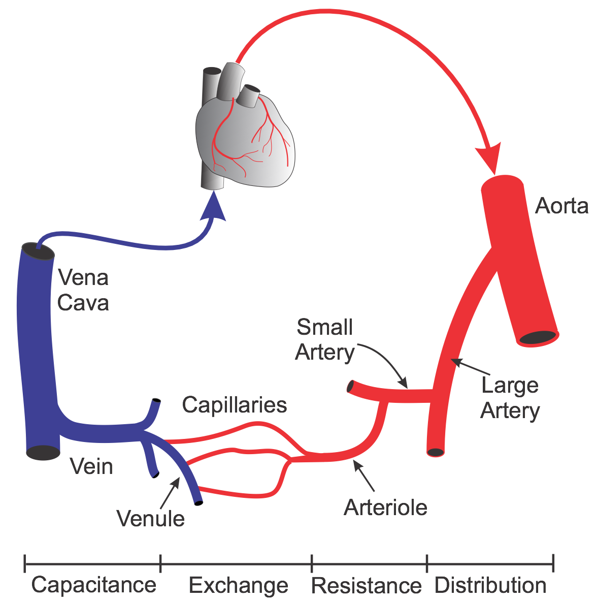
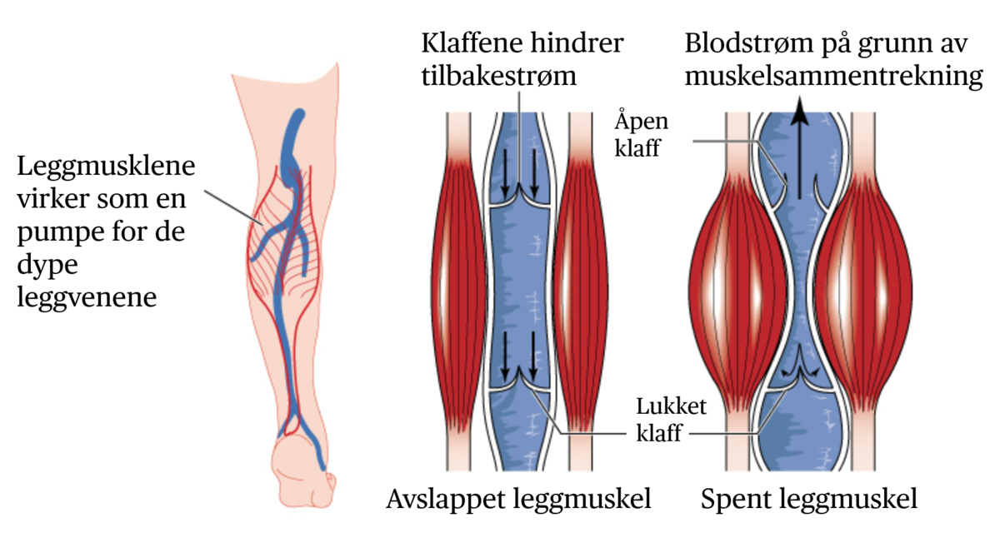
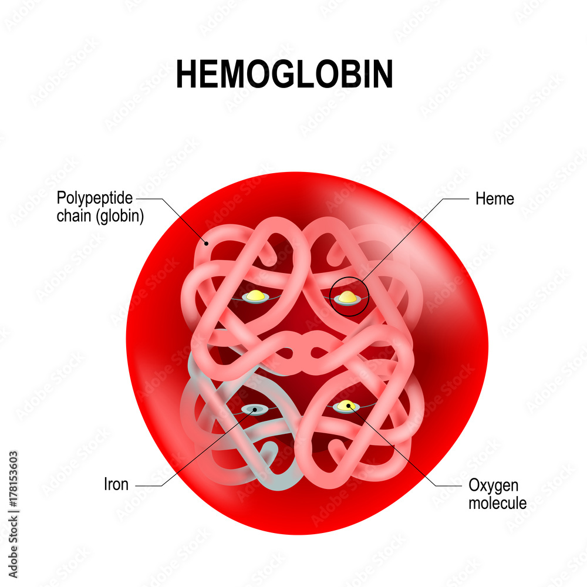
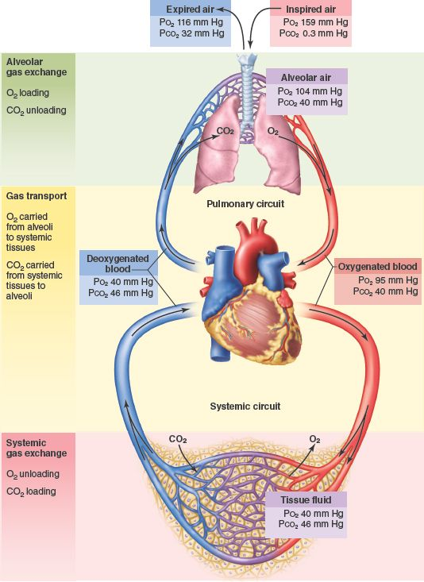
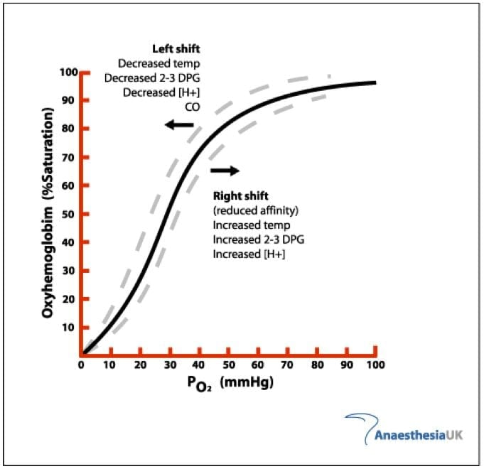

3 Det kardiovaskulære systemet

3.1 Hjertet
3.1.1 Cardiac output

3.1.2 Ventrikukære tilpasninger
Venstriklene ses å bli større (romme mer volum) som en tilpasning til utholdenhetstrening. Det blir også mer elastisk. Dette resulterer i økt slagvolum. Ved ulike sykdommer kan det så hende at en får en ugunstig hypertrofi av hjertemuskulatur, slik at ventrikkelen minker i volum (muskulatur tar opp plass i ventrikkelen/muskelen vokser innover). Dette kalles gjerne konsentrisk hypertrofi. Ved et slikt tilfelle reduseres slagvolumet. Man har også det en kaller for eksentrisk hypertrofi, der ventrikkelen utvides uten at kontraktiliteten øker.

3.1.3 Kontraktilitet
Hjertets kontraktilitet refererer til evnen hjertemuskulaturen har til å trekke seg sammen og pumpe blod effektivt. Flere mekanismer kan øke kontraktiliteten, som er avgjørende for at hjertet skal kunne tilpasse seg kroppens behov under ulike forhold. En viktig mekanisme for å øke kontraktiliteten er sympatisk nervestimulering, som skjer ved fysisk aktivitet eller stress. Når det sympatiske nervesystemet aktiveres, frigjøres noradrenalin, som binder seg til beta-1 adrenerge reseptorer på hjertemuskelcellene. Dette fører til en økning i nivåene av cAMP (cyklisk AMP) i cellen. Økt cAMP aktiverer en kaskade av biokjemiske reaksjoner som resulterer i økt frigjøring av kalsiumioner (Ca²⁺) fra sarkoplasmatisk retikulum. Kalsium er essensielt for hjertemuskelens kontraksjon, ettersom det binder seg til troponin, som gjør at aktin og myosin kan danne kryssbroer og generere kraft. Som et resultat får hjertet sterkere sammentrekninger og dermed økt blodpumping, noe som er viktig under stress eller fysisk aktivitet. Denne mekanismen gjør at hjertet kan levere mer blod til organene når behovet for oksygen og næringsstoffer øker.
3.1.4 Frank Starling loven
Økt fyllingsgrad av hjertet (økt venøs tilbakestrømning) gir økt strekk på hjertemuskulatur. Dette fører til kraftigere kontraksjon av hjertemuskelen og større slagvolum. Teorien bak er at overlappen mellom aktin- og myosinfilamentene blir mer optimal ved den økte strekken av muskelfibrene, ergo genereres større kraft. Økt blodvolum, som er en tilpasning ved utholdenhetstrening, gir altså økt salgvolum.
Denne mekaninsmen kan også settes i sving ved sykdom. Ventriklene blir fylt med mer blod, men evner dog ikke svare på den økte fyllingen og strekken av muskulaturen. Dette ender som regel med “kø” i blodårenettverket (eks pulmonal hypertensjon) som igjen resulterer i væskeansamling (ødem/lungeødem) og redusert organfunksjon.
3.2 Arterier
Arterier er blodårer som transporterer oksygenrikt blod fra hjertet til kroppen, unntatt lungearterien. De har tre hovedlag: Tunica intima, som gir en glatt overflate, tunica media, som regulerer blodtrykket gjennom glatt muskulatur og elastiske fibre, og tunica externa, som gir støtte og fleksibilitet. Arteriene er elastiske og tåler høyt trykk, og deres struktur sikrer en jevn blodstrøm til hele kroppen.

3.2.1 Aorta
Aorta er kroppens største arterie og frakter oksygenrikt blod fra venstre hjertekammer til resten av kroppen. Den består av tre hovedsegmenter: aortabuen, aorta descendens og abdominalaorta. Aorta har en tykk og elastisk vegg, spesielt i tunica media, som er rikelig med elastiske fibre. Dette gir aorta evnen til å strekke seg og trekke seg sammen med hjerteslagene, noe som hjelper til med å opprettholde et jevnt blodtrykk. Tunica intima er dekket av et lag endotelceller som sikrer en glatt blodstrøm, mens tunica externa inneholder bindevev og vasa vasorum for å forsyne de ytre lagene med næring. Aorta er utsatt for høyt trykk, spesielt ved hvert hjerteslag, og dens elastisitet spiller en avgjørende rolle i å dempe de trykkbølgene som genereres av hjertets pumpeaktivitet.
3.2.2 Arterioler
Arterioler er de minste greinene av arteriene og har en viktig rolle i å regulere blodstrømmen til kapillærene. De består av tre lag, men er mye tynnere enn større arterier. Tunica intima er kledd med et lag endotelceller som gir en glatt overflate for blodstrømmen. Tunica media, som er den mest utviklede delen i arteriolene, inneholder en høy andel glatt muskulatur, som gjør at de kan regulere sin diameter gjennom vasokonstriksjon (sammentrekning) og vasodilatasjon (utvidelse). Dette gjør arteriolene til viktige regulatorer av blodtrykket og blodstrømmen til spesifikke vev og organer. Tunica externa, det ytre laget, er tynt og består hovedsakelig av bindevev. Arteriolene skiller seg fra større arterier ved at de har mindre lumen og en mer muskuløs vegg som kan regulere blodstrømmen mer presist. I motsetning til kapillærene, som er de minste blodårene og har veldig tynne vegger for effektiv gass- og næringsutveksling, er arteriolene primært ansvarlige for å regulere trykk og strømning inn i kapillærene.
3.2.3 Kapillærer
Kapillærer er de minste og tynneste blodårene i kroppen, og de fungerer som utvekslingssteder for næringsstoffer, gasser og avfallsstoffer mellom blodet og vevet. Kapillærene består kun av ett lag endotelceller, som gir en svært tynn og permeabel vegg for at stoffene skal kunne diffundere effektivt. Denne enkle strukturen tillater at oksygen, karbondioksid, næringsstoffer og avfall kan passere fritt mellom blodet og de omkringliggende cellene. I motsetning til arterier, som har tykkere vegger for å tåle høyt trykk og transportere blod, har kapillærene svært tynne vegger for å fremme gassutveksling og metabolisme. Kapillærer skiller seg også fra arterioler, som har en mer muskuløs vegg og regulerer blodstrømmen til kapillærene ved å endre diameter. Kapillærene, derimot, er primært involvert i utvekslingen av stoffer snarere enn i blodstrømsreguleringen.

3.3 Vener
Vener er blodårer som frakter deoksygenert blod tilbake til hjertet, unntatt lungevenene. De har også tre hovedlag, men veggene er tynnere enn i arteriene, med mindre glatt muskulatur og færre elastiske fibre. Tunica intima består av endotelceller som gir en glatt overflate, og her finnes også klaffer som hindrer blodet i å renne bakover, spesielt i de nedre ekstremitetene. Tunica media er tynnere enn i arteriene og inneholder mindre glatt muskulatur, mens tunica externa består av bindevev som gir strukturell støtte. Vener har større lumen enn arterier, og deres tynnere vegger gjør dem mer utsatt for kollaps under lavt trykk. De fungerer som blodreservoarer og spiller en viktig rolle i å returnere blodet til hjertet for videre sirkulasjon.

3.3.1 Vena cava
Vena cava består av to hovedårer: vena cava superior og vena cava inferior, som er de største venene i kroppen. Vena cava superior samler deoksygenert blod fra den øvre delen av kroppen, inkludert hodet, halsen, armene og øvre thorax, og leder det til høyre atrium i hjertet. Vena cava inferior, derimot, transporterer blod fra den nedre delen av kroppen, inkludert beina, bekkenet og abdomen, til høyre atrium. Begge venene er avgjørende for returen av blod til hjertet, hvor det deretter pumpes til lungene for oksygenering. Vena cava har store lumen og tynnere vegger enn arteriene, og fungerer som blodreservoarer med lavt trykk. Begge venene er også forbundet med vasa vasorum, små blodårer som gir næring til de ytre lagene i venens vegg.
3.3.2 Perfiere, overfladiske, dype og pulmonale vener
Perifere, overfladiske, dype og pulmonale vener har spesifikke roller i sirkulasjonssystemet. Perifere vener finnes i armer og ben og fungerer som kanaler for returblodet til hjertet. Overfladiske vener ligger nær hudens overflate og er synlige, og de leder blod fra huden og subkutant vev til dypere vener. Dype vener, som ligger dypere i musklene og omkringliggende vev, transporterer blod fra de større muskelgruppene tilbake til hjertet og har et mer uttalt klaffesystem for å hindre tilbakestrømning av blod. De største dype venene finnes i bena, som vena femoralis og vena poplitea. Pulmonale vener er de spesifikke venene som frakter oksygenrikt blod fra lungene til venstre atrium i hjertet, en viktig funksjon i blodets oksygeneringssyklus. Pulmonale vener skiller seg fra andre vener ved at de transporterer oksygenert blod i stedet for deoksygenert blod.
3.4 Oksygentransport i blodet
3.4.1 Hemoglobin (Hb)
Hos menn inneholder hver dl blod ~ 15 g Hb1. Kvinner har ca. 5-10 % mindre enn menn, altså ~ 14 g. Testosteron er årsak til at menn har mer enn kvinner. Hvert gram Hb binder ~ 1.34 ml O21. Hemoglobinmolekylet består av fire globin-underenheter, hver med en polypeptidkjede. Hver globin-enhet har en heme-gruppe som inneholder ett jernatom, som binder oksygen (O₂).

Med likningen under kan man beregne O2 kapasiteten til blodet (O2(cap)):
\(0_{2(cap)} = Hb \times O_{2(Hb-cap)}\)
\(20 \frac{ml}{dl} = 15 \frac{g}{dl} \times 1.34 \frac{ml}{g}\)
3.4.2 pO2 i blodet
Ved havnivå er det arterielle oksygentrykket (pO₂) omkring 75-100 mmHg for en frisk person. Dette refererer til partialtrykket av oksygen i blodet. Det sier også noe om effektiviteten av oksygendiffusjon fra alveolene (lungenes små luftblærer) til blodet.

3.4.3 Anemi
Ved betydelig reduksjon av jern i de røde blodcellene observeres tydelig reduksjon i prestasjonsparametre og selv lett aktivitet kan føles krevende.
3.4.4 pO2 og Hb-saturasjon (metning)
Hb-molekylet har relativt lav affinitet for oksygen når jernatomene står uten oksygenmolekyler. Men når ett oksygen binder seg til én av de fire mulige plassene økes affiniteten til Hb-molekylet og gjør at de resterende plassene fylles opp lettere. Dette fenomenet er kjent som cooperative bindig (kooperativ binding). Dette forklarer kurven vi nå skal se på, oksyhemoglobin dissosiasjonsskurven og hvorfor den har den formen den har.
3.4.5 Oksyhemoglobin dissosiasjonsskurven

Den S-formede strukturen (sigmoidale formen) på O2-Hb diss-kurven er typisk. Dette fordi, som nevn i forrige avnsitt, Hb lettere binder O2 når det er mer tilgjengelig. Ved høyere temperaturer, økt konsentrasjon av H+-ioner og 2-3 DPG, ser man en høyreforskyvning av kurven (%saturasjon er lavere enn ved normalt trykk). Og motsatt ser en høyere %saturasjon ved normalt trykk når temperaturen synker, lave nivåer av H+ og 2-3 DPG.
3.5 Artikler
Haematological rather than skeletal muscle adaptations contribute to the increase in peak oxygen uptake induced by moderate endurance training2.
Phlebotomy eliminates the maximal cardiac output response to six weeks of exercise training3.
The Oxygen Cascade During Exercise in Health and Disease4.
Increased maximal oxygen uptake after sprint-interval training is mediated by central haemodynamic factors as determined by right heart catheterization5.
Blood volume expansion does not explain the increase in peak oxygen uptake induced by 10 weeks of endurance training6.